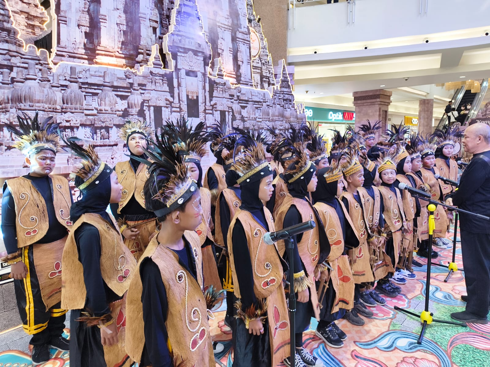
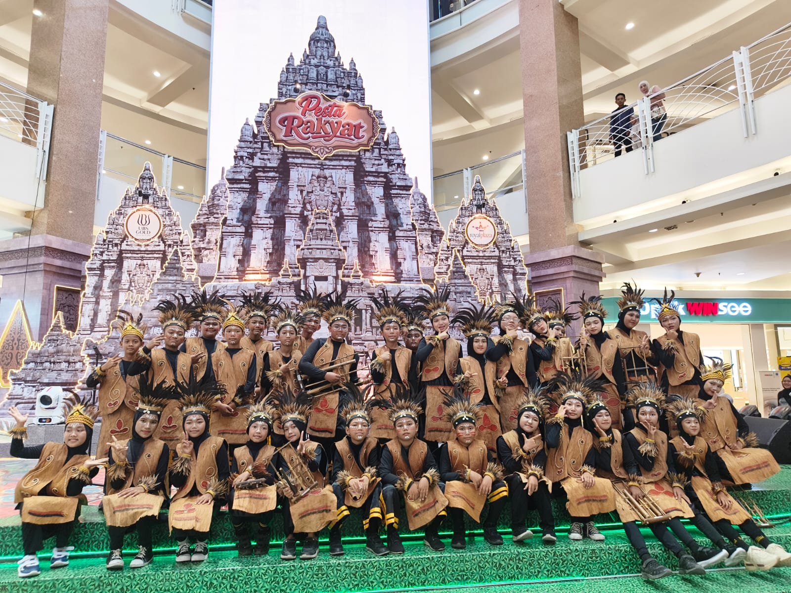

🎶 Harmoni Angklung SDN Kebonagung 1 Raih Best Costume di Festival Angklung Jawa Timur
Alunan angklung kembali menggema membawa semangat dan kebanggaan keluarga besar SDN Kebonagung 1 Sukodono. Pada tanggal 23 Agustus 2026, para siswa dengan penuh percaya diri mengikuti Kejuaraan Festival Angklung Jawa Timur yang diselenggarakan oleh Royal Plaza Surabaya.
Ajang tersebut bukan sekadar perlombaan seni musik, tetapi menjadi kesempatan berharga bagi para siswa untuk menunjukkan kreativitas, keberanian, kekompakan, serta kecintaan terhadap budaya Indonesia. Dengan membawa semangat untuk memberikan penampilan terbaik, para peserta SDN Kebonagung 1 tampil dengan penuh energi dan keyakinan.


BEST COSTUME
Kejuaraan Festival Angklung Jawa Timur
Penyelenggara: Royal Plaza Surabaya
Salah satu hal yang membuat penampilan SDN Kebonagung 1 semakin istimewa adalah kreativitas dalam menampilkan kostum yang menarik dan selaras dengan karakter pertunjukan. Perpaduan antara musik, gerakan, kekompakan, dan kostum menjadikan penampilan para siswa semakin hidup serta mampu memberikan kesan tersendiri bagi para penonton.
Meraih penghargaan Best Costume menjadi bukti bahwa setiap unsur dalam sebuah pertunjukan memiliki arti penting. Para siswa belajar bahwa keberhasilan tidak hanya ditentukan oleh hasil akhir, tetapi juga oleh proses panjang yang dilalui dengan latihan, kedisiplinan, kerja sama, kreativitas, dan keberanian untuk tampil di hadapan banyak orang.
🎋 Angklung Mengajarkan Arti Kebersamaan
Angklung merupakan alat musik yang memiliki keistimewaan. Setiap pemain memegang peran penting untuk menghasilkan sebuah harmoni. Tidak ada satu suara yang dapat berdiri sendiri. Semua harus bermain bersama, saling mendengarkan, menjaga tempo, dan mengikuti arahan.
Nilai tersebut menjadi pembelajaran yang sangat berharga bagi siswa. Mereka belajar bahwa sebuah prestasi akan semakin indah ketika diraih melalui kebersamaan. Satu orang mungkin memiliki kemampuan yang hebat, tetapi sebuah tim yang kompak mampu menciptakan harmoni yang luar biasa.
Semangat para peserta terlihat sejak persiapan hingga penampilan berlangsung. Rasa lelah setelah latihan tidak menyurutkan tekad mereka. Justru setiap tantangan menjadi motivasi untuk terus memperbaiki diri. Mereka datang bukan hanya untuk mengikuti perlombaan, tetapi juga membawa nama baik sekolah dan menunjukkan bahwa generasi muda mampu menjadi bagian dari pelestarian seni budaya bangsa.
Dukungan dari guru, orang tua, dan seluruh keluarga besar SDN Kebonagung 1 menjadi energi tambahan bagi para peserta. Sorakan, doa, dan motivasi yang diberikan menjadi penyemangat agar mereka tampil maksimal. Kebersamaan tersebut menjadi bagian penting dari perjalanan menuju sebuah prestasi.
Penghargaan Best Costume pada Festival Angklung Jawa Timur ini diharapkan menjadi motivasi bagi seluruh siswa SDN Kebonagung 1 untuk semakin mencintai seni dan budaya Indonesia. Prestasi ini bukanlah akhir perjalanan, melainkan langkah awal untuk terus berkarya, berlatih, dan berani menunjukkan kemampuan terbaik di berbagai kesempatan.
“Bunyikan angklungnya, satukan iramanya, kobarkan semangatnya, dan raih prestasinya!”
🎋 SDN Kebonagung 1 — Berani Berkarya, Kompak Berkarya, Hebat Berprestasi! 🏆